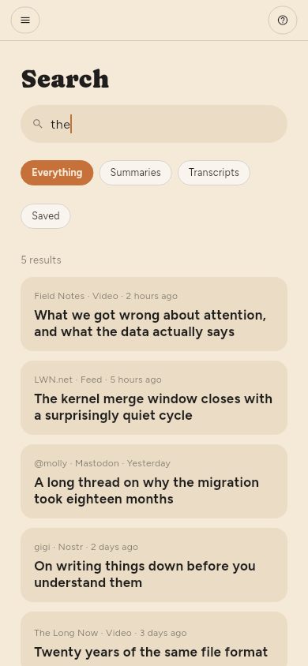
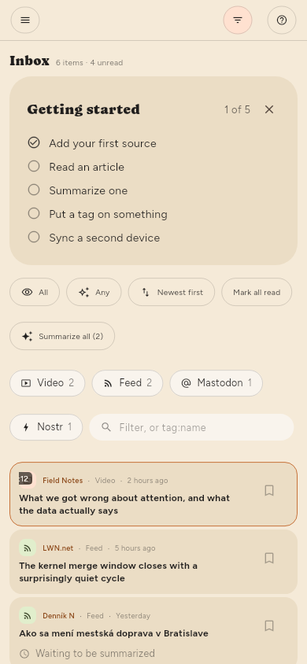

← Summaries · Contents · Keeping things →
Finding things
Search in the shelf, or /.
Search covers titles, article text and video transcripts. A transcript hit is a moment — it names the time and seeks there when you open it. An item with no title is found by its address.

The text box in the filter panel is a different thing: it narrows the list in front of you rather than opening results of its own. It matches the title, the source's name and the summary — Search also reads article text and transcripts.

Every filter asks the whole library, not the part of it on screen. A word, a tag, Unread, Not summarized, a feed, a kind: each one is answered from storage, so the number above the list is the number of things there are. tag:linux finds everything carrying that tag however old it is; two tags narrow rather than widen, and a value with a space goes in quotes: tag:"machine learning".
Tags (Premium only)
An article's tags are the subjects its summary picked out, and they are yours to change: the chips under the title in the reader add and remove, and clicking one shows everything carrying it.
A source can be tagged too, in its panel — and an article is filtered by its source's tags as well as its own, so tagging a feed organises the hundred articles already in it rather than only the ones that arrive next.
Every tag in use is listed under Tags in the shelf, with what it holds. Clicking one narrows the list; clicking it again clears it.